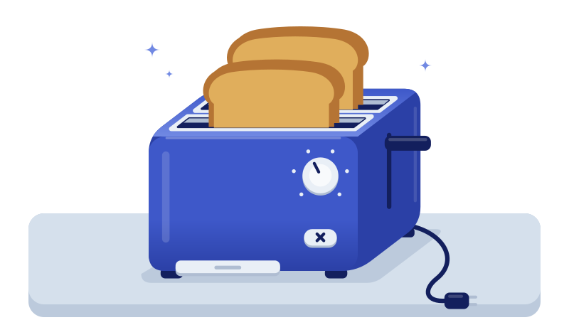
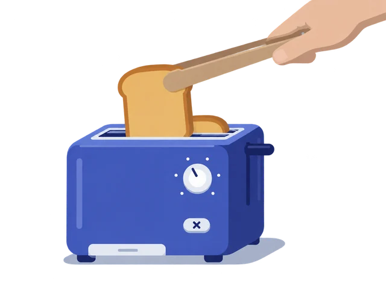
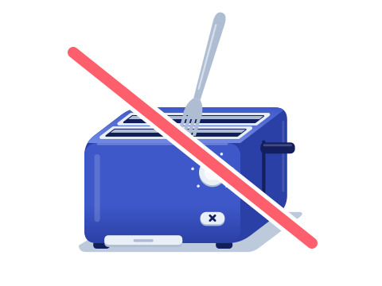
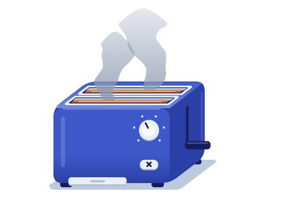
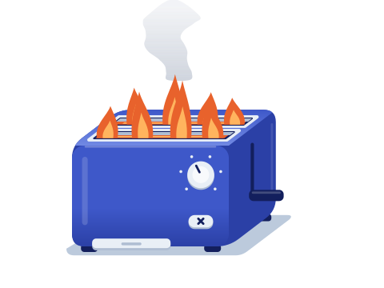
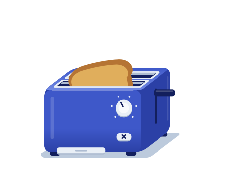
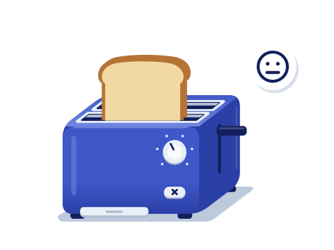
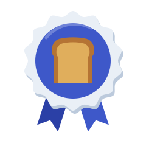

Тостер без страха
Приготовь идеальный тост за несколько минут

Тостер — простой прибор. Но если пользоваться им неправильно, можно получить угольки вместо завтрака, обжечь пальцы или даже устроить пожар.
За 3 минуты ты научишься:
- понимать, какая кнопка за что отвечает;
- готовить тост нужной степени поджаристости;
- безопасно доставать горячий хлеб;
- спокойно действовать, если что-то пошло не так.
За выполнение заданий и правильные ответы ты будешь получать крошки. Соберёшь 10 из 13 — получишь значок «Мастер тоста».
Знакомимся с тостером
Нажми на каждую точку, чтобы узнать, что это.
-
Слоты (щели сверху)
Сюда кладут хлеб. Внутри — нагревательные спирали, они и поджаривают хлеб.
-
Рычаг (сбоку)
Опускает хлеб внутрь и включает нагрев. Когда тост готов — сам поднимается.
-
Регулятор степени поджаривания (крутилка с цифрами)
Цифры от 1 до 6–7: чем больше цифра, тем дольше жарится хлеб и тем он темнее.
-
Кнопка «Стоп» (часто крестик или Cancel)
Останавливает работу в любой момент — тост сразу выскочит.
-
Поддон для крошек (выдвижной, снизу)
Собирает крошки. Их нужно регулярно вытряхивать — скопившиеся крошки могут загореться.
-
Шнур с вилкой
Подключает тостер к розетке. Он должен быть целым — без трещин и оголённых проводов.
Отличное начало!
+2 крошкиГотовим тостер к работе
Выбери место. Ровная, устойчивая поверхность, которая не боится тепла. Вокруг — свободное пространство: не под навесным шкафчиком, подальше от штор, полотенец и раковины.
Проверь тостер. Сними всю упаковку и наклейки. Убедись, что шнур целый, а поддон для крошек вставлен до конца.
Подключи. Вставь вилку в розетку сухими руками.
Какой тост ты любишь?
Передвинь ползунок и посмотри, каким получится тост.
1–2Слегка подсушенный. Для свежего мягкого хлеба или если любишь светлые тосты.
3–4Золотистый — классика. Лучший выбор для первого раза.
5–6Тёмный и хрустящий. Для плотного или чёрствого хлеба. Следи внимательно — легко пересушить.
Начнём!
Нажимай на стрелку, чтобы посмотреть все шаги.
Расставь шаги по порядку
Нажимай на карточки по очереди — от первого шага к последнему. На компьютере их можно перетаскивать.
Идеальная последовательность! Всё готово к первому тосту.
+4 крошкиПочти! Подумай, что нужно сделать до того, как хлеб окажется внутри. Попробуй ещё раз.
Правильный порядок:
- Поставить тостер на ровное место вдали от воды и штор
- Подключить вилку в розетку сухими руками
- Выбрать степень поджаривания на регуляторе
- Положить по одному ломтику в каждый слот
- Опустить рычаг до щелчка
- Дождаться, когда тост поднимется сам
Осторожно, горячо!
Тост и корпус тостера сразу после работы очень горячие. Подожди несколько секунд.
Бери тост за край или используй деревянные или силиконовые щипцы.
Если тост поднялся невысоко, на многих моделях можно приподнять рычаг ещё чуть выше.
-
Когда закончишь — выключи тостер из розетки.


Без паники!
Иногда что-то идёт не по плану. Главное — знать, что делать.
Нажми на карточку, чтобы перевернуть её и узнать, как действовать.
Перевёрнуто: 0 из 4
-

Из тостера пошёл дым
Что делать:
- Нажми «Стоп» — хлеб выскочит, нагрев прекратится.
- Выключи тостер из розетки.
- Открой окно и проветри кухню.
Важно: Не заливай тостер водой — можно получить удар током.
-

Внутри тостера огонь
Что делать:
- Не вытаскивай горящий хлеб и не заглядывай в слоты.
- Если можешь сделать это безопасно — выключи тостер из розетки.
- Если огонь не потух, накрой тостер одеялом: без доступа воздуха огонь быстро гаснет.
Важно: Не лей воду.
Важно: Огонь перекинулся на что-то рядом и его не получается потушить своими силами — уходи из кухни и звони 112 (или 101).
-

Тост застрял внутри
Что делать:
- Сначала выключи тостер из розетки.
- Дай ему остыть несколько минут.
- Аккуратно достань хлеб деревянными или силиконовыми щипцами.
Важно: Никаких ножей и вилок и не тряси включённый тостер.
-

Тост получился бледным
Что делать:
- Запусти тостер ещё раз на низкой цифре (1–2).
- Не отходи — подсушенный хлеб темнеет очень быстро.
В следующий раз просто прибавь одну цифру на регуляторе.
Теперь ты знаешь, как действовать в любой ситуации!
+3 крошкиМожно или нельзя?
Курс почти подошёл к концу. Давай проверим, как запомнилось то, что мы изучали.
Перетащи каждую карточку в нужную зону (на телефоне — свайп влево или вправо) или нажми «Нельзя» или «Можно» на карточке.
Нельзя
-
Засунуть вилку или нож в слот
Нельзя — верно — неверноУдар током: внутри — спирали под напряжением.
-
Трогать тостер мокрыми руками
Нельзя — верно — неверноВода проводит ток.
-
Вытряхивать крошки из поддона, когда тостер остыл и выключен из розетки
Можно — верно — неверноТак и нужно — регулярно.
-
Жарить хлеб с маслом, сыром или начинкой
Нельзя — верно — неверноНачинка стекает на спирали и может загореться. Для бутербродов есть специальные пакеты для тостера — только если их разрешает производитель.
-
Заворачивать хлеб в фольгу
Нельзя — верно — неверноПерегрев и риск пожара; фольга может замкнуть спирали.
-
Выключать тостер из розетки после использования
Можно — верно — неверноЭто хорошая привычка.
-
Мыть тостер под краном
Нельзя — верно — неверноМой только снаружи влажной тряпкой и только когда он выключен из розетки и остыл.
-
Оставлять работающий тостер без присмотра
Нельзя — верно — неверноХлеб может загореться за считаные секунды.
Можно
Ты отлично знаешь правила!
+2 крошкиКурс пройден!
Твой результат: 0 из 13 крошек

Мастер тоста
Ещё не мастер
Готовить тосты неправильно не только невкусно, но и небезопасно!
Теперь ты знаешь, как:
- устроен тостер: слоты, рычаг, регулятор, «Стоп», поддон для крошек;
- подготовить его: устойчивое место, подальше от воды и штор, сухие руки;
- выбрать режим: начинай с «3» и подстраивай под себя;
- запустить и не отходить, пока тост готовится;
- достать тост: без металла, деревом или за край;
- действовать спокойно: дым — «Стоп» и вилку из розетки, огонь — не открывать и не заливать водой.
Приятного аппетита!